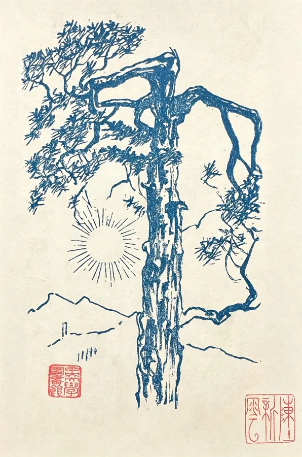
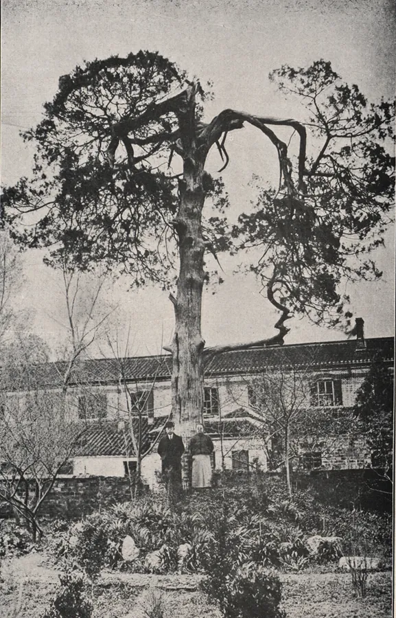
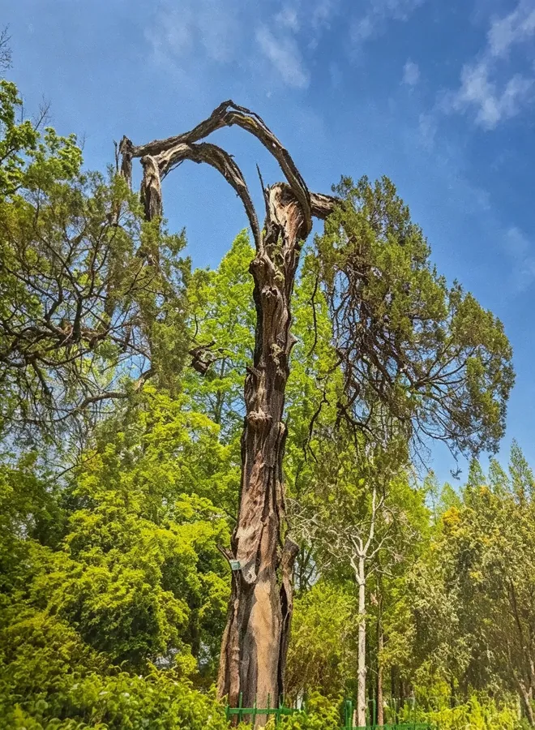

1935
中央大学校长 · 罗家伦
情境
案上就这些。在下判断之前，还可以问三个问题。
基于校史资料的模拟回应
档案 1 / 3
情境为基于公开史料的场景重构，对话与数值为示意，正式发布前请以校史馆资料核实。
四牌楼 · 六朝松
触摸年轮，在东南大学的关键节点做一次判断——树会记住你的选择。



六朝松是东南大学的精神图腾，位于校园西北，相传为六朝遗株，为金陵城古树之至古。据著名林学家马大浦、黄保龙鉴定，其学名为“桧柏”，树龄已逾千年。“古堞烟埋宫井树，陈主吴姬堕泉处”，六朝宫苑，今已不复找寻，唯此青松历经千余年，栉风沐雨，仍霜干虬枝，纷披偃盖，饶有生意。六朝松见证了六朝宫苑的繁华疏落，见证了《昭明文选》的成书、《永乐大典》的编纂，更见证了学校辉煌灿烂的百年办学历程。
完整校史以校史馆资料为准；此处仅列校名与办学层次的沿革。查看完整校史 →
这里进入约 2–2.5 分钟的抉择体验：情境 → 调查 → 选择 → 人物回应 → 历史揭示。当前为 B 站原型，先用占位页面验证「进入 / 返回」的手感。
案上就这些。在下判断之前，还可以问三个问题。
基于校史资料的模拟回应
情境为基于公开史料的场景重构，对话与数值为示意，正式发布前请以校史馆资料核实。
你在这棵树上做过的选择
辅助年表 · 校史沿革
1902 年至今，这所学校换过很多名字：三江、两江、南高、东大、中山、中大、南工—— 每一次更名，都是一次时代转弯。左边点一个时期，右边展开它的故事。
Chapter 02 · 红色文化
梅庵、四牌楼、雨花台——东大的红色记忆不在展板上，就在你每天路过的那栋楼里。
Chapter 03 · 八大书院
三江、南高、东南、中大、南工、南雍、日新、至善——2025 年东大成立八大书院。 名字连起来，几乎就是一部校史。拖动这条画廊，它们会绕着轴转；点开任意一所，看它的故事。
《礼记 · 大学》：“大学之道，在明明德，在亲民，在止於至善”
岁月失语，惟石能言
页面内容依据东南大学公开资料整理，数字与表述请以校史馆 / 官方发布为准。
三维场景为示意性原创建模，非工程图纸。
COLLEGE